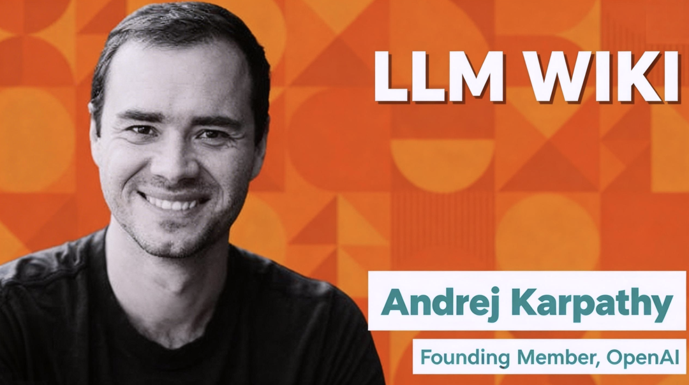

城主说|这是一篇很有意思的文章。Andrej Karpathy两天前刚提出了备受关注的以Obsidian+AI构建个人知识库的模式，这个路径是非常明确的，Obsidian笔记软件在本地管理了以md为格式的知识文档，提供了知识库构建所需要的各种目录索引组织功能， Andrej提出的设计模式让AI Agent来接管Obsidian，让人们从整理原始素材的繁琐工作中解脱出来，让大家真正拥有一个自主整理资料乃至分析提炼的AI助手。
所以Anredj其实是提出了一种区别于传统对话机器人的全新个人知识库构建范式。而今天，Andrej更是直接给出了详细方法，这文章实就是直接给AI Agent看的完整构建指南。
为了读者看完就能直接上手操作，本文在关键步骤加入了 💡【手把手实操注释】。读者可以把它当作一份“实战搭建指南”。
构建个人 LLM Wiki（大语言模型维基）的设计模式
作者：Andrej Karpathy
这是一个“概念文件（Idea File）”，它的设计初衷是让你直接复制粘贴给你的 LLM Agent（例如 OpenAI Codex、Claude Code、OpenCode / Cursor / Pi 等）。本文的目的是传达高层次的理念，而你的 AI 助手将会和你一起协作，构建出具体的实现细节。
💡 【实操注释：第一步该怎么做？】
Karpathy 的意思是，你不需要自己从零写代码。你可以直接把这篇中文版，喂给具备“读取本地文件”能力的 AI 工具。
告诉 AI：“阅读这篇文章，理解 LLM Wiki 的理念，以后你就是我的 Wiki 维护员了。”
核心理念 (The core idea)
大多数人使用 LLM 处理文档的体验类似于 RAG（检索增强生成）：你上传一堆文件，当你提问时，LLM 检索出相关的文本块，然后生成答案。这种方法能用，但问题是：LLM 每次回答新问题时，都在“从零开始”重新发现知识。没有任何知识沉淀。 如果你问一个需要综合五份文档的复杂问题，LLM 每次都得重新去寻找并拼凑相关碎片。NotebookLM、ChatGPT 的文件上传功能，以及大多数 RAG 系统都是这样工作的。
这里的理念完全不同。LLM 不再是在你提问时才去原始文档里检索，而是持续构建并维护一个持久的 Wiki（维基库）——这是一个由相互链接的 Markdown 文件组成的结构化集合，它介于你和原始资料之间。
当你添加一份新资料时，LLM 不是简单地建立索引留待后用。它会主动阅读它，提取关键信息，并将其整合到现有的 Wiki 中——更新实体页面，修改主题摘要，标注新数据与旧观点的冲突之处，强化或挑战正在演变的综合结论。知识被“编译（compiled）”一次后就会保持更新，而不是每次提问都重新推导。
这是最关键的区别：Wiki 是一个持久的、具备复利效应的产物。 交叉引用已经存在了，矛盾之处已经被标记了，总结结论已经反映了你读过的所有内容。你添加的资料越多、问的问题越多，这个 Wiki 就越丰富。
你永远（或极少）需要自己动手写 Wiki——LLM 会负责编写和维护这一切。你的职责是寻找资料、探索发现、以及提出好问题。 LLM 则负责所有的“苦力活”——总结、交叉引用、归档、记账，正是这些枯燥的工作让一个知识库随着时间推移变得真正有用。
在实际操作中，我会在屏幕一边打开 LLM Agent，另一边打开 Obsidian（一款本地笔记软件）。LLM 根据我们的对话修改文件，我则实时浏览结果——点击链接跳转、查看知识图谱（graph view）、阅读更新后的页面。
Obsidian 是开发工具（IDE），LLM 是程序员，而你的 Wiki 就是代码库。
适用场景 (Examples)
这套模式适用于多种情境：
* 个人管理：追踪你的目标、健康、心理、自我提升——将日记、文章、播客笔记归档，随着时间推移构建一个结构化的“自我画像”。
* 深度研究：花费数周或数月深入研究一个主题——阅读论文、文章、报告，并逐步构建一个包含演进论点的全面 Wiki。
* 阅读书籍：边读边将每一章归档，为人物、主题、情节线索建立页面，记录它们之间的关联。读完后，你就会拥有一个内容丰富的伴读 Wiki。（想想类似《指环王》粉丝建立的维基百科，成千上万个链接页面，现在你可以用 LLM 自己建一个）。
* 商业/团队：一个由 LLM 维护的内部 Wiki，数据来源可以是 Slack 聊天记录、会议记录、项目文档、客户通话。
* 竞品分析、尽职调查、旅行规划、课程笔记、爱好钻研——任何需要随着时间推移积累知识，且希望知识井然有序而不是散落一地的场景。
系统架构 (Architecture)
整个系统分为三个层级：
1. 原始资料层 (Raw sources)：你收集的原始文档库。文章、论文、图片、数据文件。这些是不可变（immutable）的——LLM 只能读取它们，绝不能修改它们。这是你的事实真相源（Source of truth）。 2. Wiki 层 (The wiki)：由 LLM 生成的 Markdown 文件目录。包括摘要、实体页面、概念页面、对比表格、概览和综合分析。LLM 完全拥有这一层。它负责创建页面、更新内容、维护交叉引用并保持一致性。你负责读，LLM 负责写。 3. 约束架构层 (The schema)：一个配置文件（例如 Claude Code 的 CLAUDE.md或 Codex 的AGENTS.md），用于告诉 LLM 这个 Wiki 的结构是什么、命名约定是什么，以及在提取资料、回答问题或维护 Wiki 时要遵循什么工作流。你和 LLM 会随着时间的推移不断优化这个文件。
💡 【实操注释：普通用户如何在电脑上建立这个架构？】
你只需要在电脑桌面上新建一个文件夹，比如叫My_AI_Wiki，然后在里面建三个子文件夹/文件：
📁Raw_Sources(你把下载的 PDF、网页文本扔这里，别让AI改)
📁Wiki_Pages(让 AI 在这里面自由创建和修改 .md 笔记)
📄Agents.md(这是给AI看的规则说明书)
操作方式：用你的AI Agent软件打开这个My_AI_Wiki文件夹，你就可以直接在聊天框里让 AI 读取Angets.md, 它就开始干活了。
日常操作 (Operations)
摄入资料 (Ingest)：
你把一份新资料扔进原始资料库，然后叫 LLM 处理它。例如：LLM 读取资料，跟你讨论核心观点，然后在 Wiki 中写一页摘要，更新目录索引，更新各个相关的实体和概念页面，最后在日志里写下一笔。
一份资料可能会触及 10-15 个 Wiki 页面。我个人倾向于每次只摄入一份资料并保持参与感——我会阅读摘要、检查更新、引导 LLM 强调哪些内容。你也可以建立自己的工作流并写在 schema 规则里。
💡 【实操注释：让AI Ingest的有效提示词（Prompt）举例】
"请阅读Raw_Sources文件夹中刚放入的《2024新能源报告.pdf》。读完后：1. 在Wiki_Pages创建该报告的摘要页面；2. 如果报告提到了电池技术，去更新已有的固态电池.md页面；3. 更新总目录index.md。"
查询 (Query)：
你向 Wiki 提问。LLM 会搜索相关页面，阅读它们，并附上引用来源生成答案。答案可以是 Markdown 页面、对比表、幻灯片或图表。
最重要的见解是：高质量的答案应该作为新页面存回 Wiki 中。 你要求做的横向对比、分析、发现的关联——这些都是有价值的，不应该消失在聊天记录里。让你的探索像原始资料一样在知识库中产生复利。
代码审查/健康检查 (Lint)：
定期让 LLM 对 Wiki 进行健康检查。寻找：页面之间的矛盾、被新资料推翻的旧观点、没有外部链接的“孤儿页面”、提到了但没有专属页面的重要概念、缺失的交叉引用等。这能让 Wiki 在膨胀时保持健康。
索引与日志 (Indexing and logging)
有两个特殊文件能帮助 LLM（以及你）在 Wiki 不断增长时进行导航：
• index.md(内容目录)：它是 Wiki 中所有内容的目录。每个页面都有一个链接、一句话摘要，也许还有日期或来源数量等元数据。按类别组织。LLM 在每次摄入新资料时都会更新它。LLM 回答问题时，会先看 index 找到相关页面。在中等规模下（~100 份资料，数百个页面），这种方法出奇地好用，无需搭建复杂的向量检索（RAG）基础设施。• log.md(操作日志)：它是按时间顺序记录的。这是一个“只能追加（append-only）”的记录，记录了何时发生了什么（摄入、查询、检查）。小技巧：如果每条记录都以一致的前缀开头，日志就能用简单的工具进行解析。这能让 LLM 了解最近做了什么。
💡 【实操注释：为什么这两个文件极其重要？】
因为目前 AI 的“上下文窗口”是有限的。如果不建索引，AI 无法瞬间看清几百个文件的全貌。index.md就像是一张全局地图，每次 AI 接到任务，你让它先看地图，再决定去修改哪个具体的本地文件。
可选：命令行工具 (Optional: CLI tools)
随着 Wiki 变大，你可能需要帮助 LLM 更高效操作的工具。最明显的就是搜索引擎。在小规模时 index.md 就够了，但做大后你需要真正的搜索。qmd 是个不错的选择（一个本地 markdown 搜索引擎）。你也可以自己让 LLM 帮你写一个简单的搜索脚本。
(注：对于普通小白用户，直接使用 Obsidian 自带的搜索，或者 Cursor 的 Codebase 检索功能即可，无需折腾复杂的命令行工具。)
技巧与窍门 (Tips and tricks)
1. Obsidian Web Clipper：一个浏览器插件，能把网页文章转换成 Markdown。非常适合快速把资料抓进你的 Raw_Sources。2. 把图片下载到本地：在 Obsidian 中设置快捷键将引用的图片下载到本地。这样 LLM 可以直接查看本地图片，而不是依赖随时会失效的网址链接。 3. Obsidian 知识图谱 (Graph view)：这是查看 Wiki 形状的最佳方式——什么连接着什么，哪些是核心枢纽，哪些是孤岛。 4. Marp 幻灯片：一种基于 Markdown 的 PPT 格式。 5. Dataview 插件：如果你让 LLM 在页面开头加上 YAML 元数据（如标签、日期），Dataview 插件能帮你生成动态表格。 6. Git 版本控制：Wiki 只是一个包含 Markdown 文件的文件夹（git repo）。你可以免费获得历史版本和防呆备份。就算 AI 把文件改乱了，你也可以一键回撤。
为什么这种模式有效 (Why this works)
维护一个知识库最繁琐的部分不是阅读或思考，而是“记账（bookkeeping）”。
更新交叉引用、保持摘要最新、留意新旧数据的冲突、在几十个页面间保持一致性。人类之所以会放弃维护 Wiki，是因为维护的负担增长得比它带来的价值快得多。
但是，LLM 不会觉得无聊，不会忘记更新链接，并且一次操作就能修改 15 个文件。因为维护成本接近于零，所以 Wiki 能够一直保持良好的状态。
人类的工作是精选资料、指导分析、提出好问题，并思考这一切的意义。LLM 的工作是搞定剩下的一切。
----全文完----
💡 【最终行动指南：今天如何跑通这套系统？】
1. 下载并安装 Obsidian（用于可视化查看你的知识库）。
2. 下载并安装你喜欢的AI Agent - 从最近热门的各种龙虾，或者Claude Code， OpenAI Codex。
3. 在电脑上建一个文件夹（如 LLM_Wiki），在里面建好 Raw_sources、Pages 等子文件夹。
4. 把你想让 AI 看的 PDF/网页放到 Raw_sources 里。在AI Agent创建一个定时任务：
"我希望你作为我的知识库管家。根据Agents.md定义的框架，阅读 Raw_sources 里的文件，提炼核心观点，然后在 Pages 文件夹里为每一个核心概念创建一个 Markdown 笔记。并在根目录创建一个 index.md 记录所有笔记的链接。如果遇到旧笔记，请自动更新它们。"
5. 用 Obsidian 打开同一个文件夹，看着 AI 为你自动搭建出相互链接的知识宇宙！